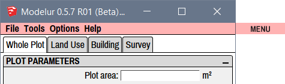
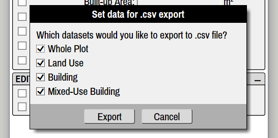
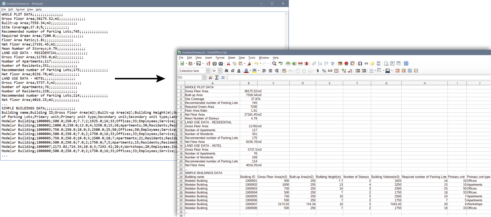
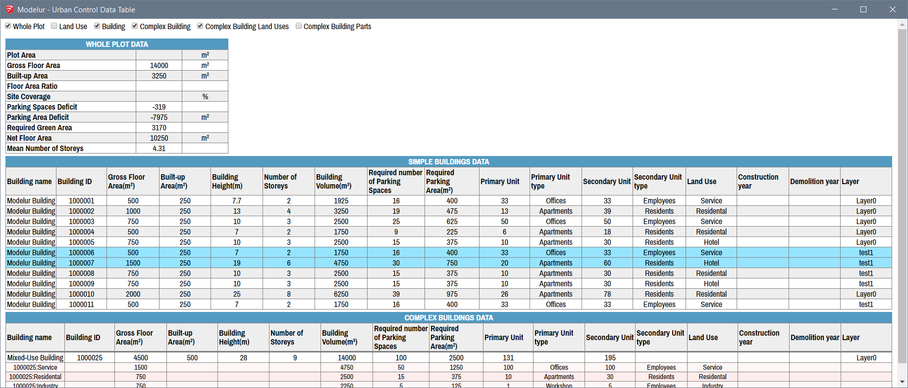

Menu
Menu is the topmost part of Modelur's user interface window (Figure 4.01). It containts four sub-categories: File, Tools, Options and Help, which are explained in detail below.

File¶
File → Open
Opens a dialog window that allows you to open existing SKP file.
File → Export Urban Design Control Values…
This is used to export urban control values (such as Gross Floor Area, FAR, Required number of parking lots, etc.) of currently opened model into CSV file. Before exporting the data, you have an option to choose which values you want to export (Whole Plot, Land Uses, Buildings, Complex Buildings). By default all options are selected for export (Figure 4.02).
Additionally, when you choose to export data for Complex Buildings, you have an option to export more details about it. This can be done be either exporting its data 1) by Land Use and 2) for each Simple Building from which it is constructed, or both.

Exported CSV file can then be opened by any major spreadsheet software (eg. Excel, Google Sheets or LibreOffice Calc, Figure 4.03).
Tip: When importing the data, make sure you have semicolon marked as separator sign in the spreadsheet software you are using.

Tools¶
Open Urban Control Data Table
This will open a new, interactive Window with the complete urban control data of your model inside SketchUp (Figure 4.04). By clicking on the appropriate checkboxes at the top of this new Window, you can choose which sets of data are displayed (Whole Plot, Land Uses, Buildings, Complex Buildings). All of the values are refreshed on each model update and you can use this Window to select specific Buildings.

By clicking on a (Complex) Building row in this Window, Modelur will select its counterpart inside the 3D Window. And vice versa - when you select the Building in 3D Window, it will get selected in the data table, too. Rows with selected Buildings are marked with a light blue color (Buildings 1000006 and 1000007 in the image above).
If needed, (Complex) Buildings can also be sorted by their values.
For Complex Buildings there is an option to see more details about it. This can be done be either showing its data 1) by Land Use and 2) for each Simple Building from which it is constructed, or both. Both options are available on the top of the Window if Complex Building option is selected.
Randomize Building Heights
Using this functionality you can randomize selected Buildings number of storeys. Once Buildings are selected, click on this button and you will be presented with two options. If you select Absolute Number of Storeys all buildings will be randomized to number of storeys between min and max value. If you choose Relative Number of Storeys, selected Building's storeys will be randomized based on their current Number of Storeys in the range between min and max values specified.
Create Terrain
Calculate Sum of Selected Buildings
Use this when you need to know the sum of Gross Floor Area and Built-up Area, Mean Number of Storeys, Parking Space Deficit for selected Buildings. Once Buildings are selected and you click this button, a temporary window will appear inside Modelur UI showing you all the numbers mentioned.
Optimize Buildings for Google Earth
Once your urban design proposal is finished, you might want to export it to geolocated KMZ file, which can be opened by many programs, including Google Earth. Using this feature Modelur will automatically optimize all Modelur Buildings by removing all unnecessary faces. If you want, you can also tell it to export floor Edges, so that the Building's storeys are visible inside Google Earth.